A Design Study on Visual Analytics for EEG Artefact Removal
Niklas Tscheppe, BSc
Master's Defense · Computer Science · Institute of Visual Computing
Supervisors: Julian Rakuschek, Tobias Schreck
Consultants: Michael Leitner, Selina Wriessnegger · Institute of Neural Engineering
25 June 2026
Title image generated with ChatGPT, 2026
Good Morning!
Design Study Methodology (Sedlmair et al.)
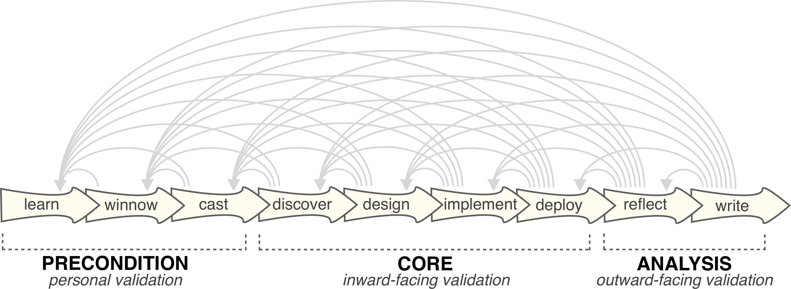
Sedlmair et al., Design Study Methodology , IEEE TVCG 18(12):2431–2440, 2012. © IEEE
So what is a design study?
Electroencephalography (EEG)
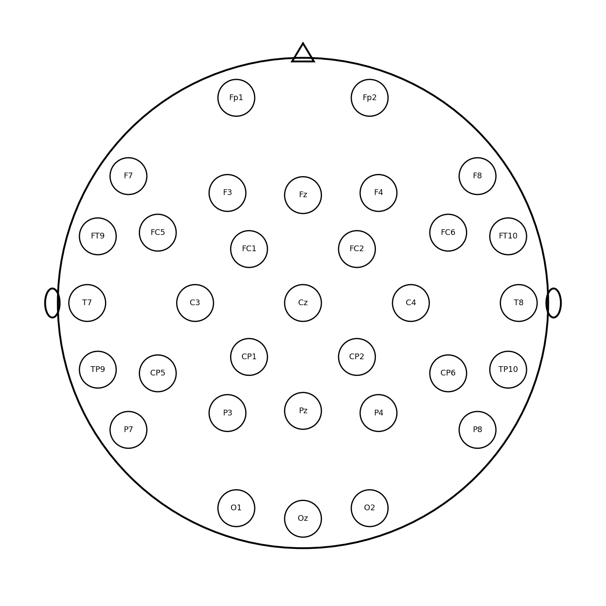
32-channel 10–10 electrode layout
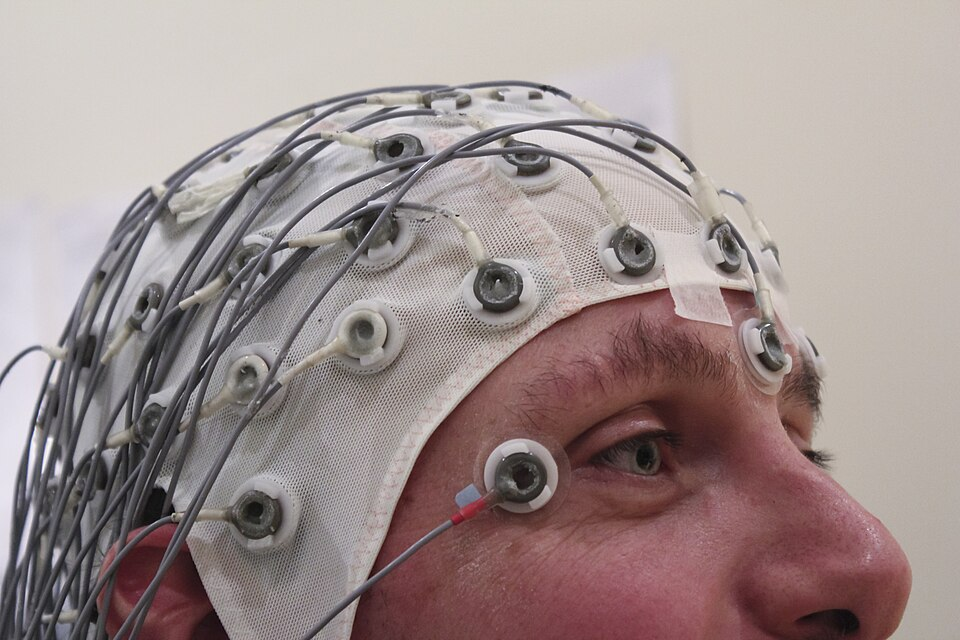
"EEG Recording Cap" by Chris Hope · CC BY 2.0
so what is eeg?
EEG Artefacts
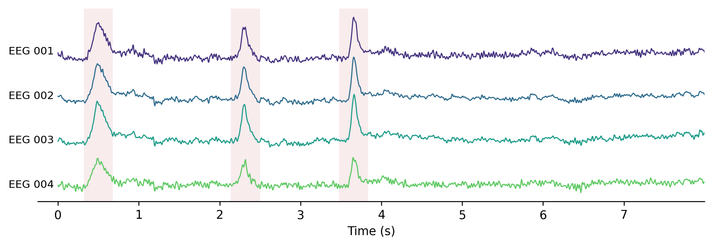
the reason: various artefacts from non-brain signals
Artefact Types
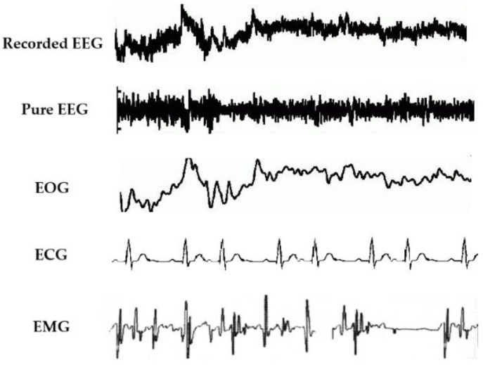
Jiang et al., Removal of artifacts from EEG signals: a review , Sensors 19(5):987, 2019. CC BY 4.0
Physiological
Technical
Line noise
Electrode / channel noise
Movement
Environmental
artefacts can be split in 2 groups:
Independent Component Analysis
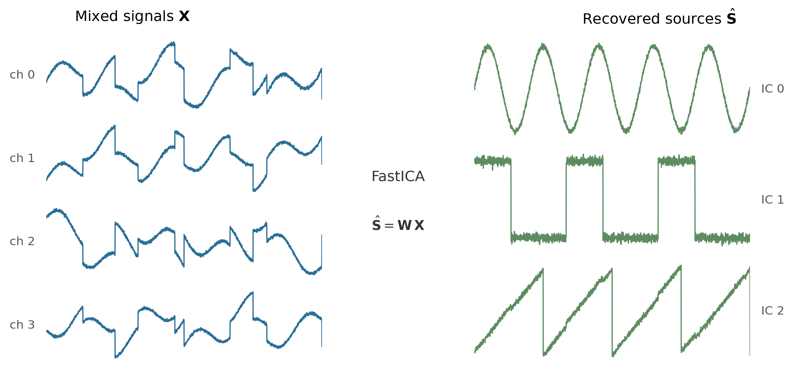
X = A·S → Ŝ = W·X
ica separates the mixed signal into independent sources
Manual Component Classification
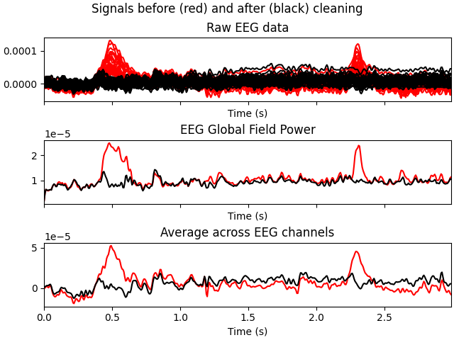
Figure: MNE-Python, ica.plot_overlay (sample dataset), BSD-3-Clause. Gramfort et al., MEG and EEG data analysis with MNE-Python , Front. Neurosci. 7:267, 2013.
but ica doesnt tell you which component is brain and which is artefact
Existing Tools
Capability MNE-Py FieldTrip EEGLAB ICLabel MARA ADJUST
Computational primitives ICA decomposition ● ● ● — — — Power spectrum ● ● ● — — — Algorithmic decision ◐a ○ ○b ● ● ● Confidence score ◐a ○ ○b ● ● ○ Cross-subject matching ● ○ ◐ — — — Interactive workflow Single-component view ● ◐ ◐ — — ◐ Linked view updates ○ ○ ○ — — — Cross-participant browser ○ ○ ◐ — — — Component clustering view ○ ○ ◐ — — — Batch apply recommendations ○ ○ ○b — — — Label export ● ◐ ◐ ● ● ●
● supported · ○ absent in core · ◐ partial. a per-artefact detectors, no unified classifier/calibrated probability. b via plugins.
before building own solution, we look at whats already out there
Research Questions
RQ1
Which visualisation and interaction techniques support expert decision-making in ICA artefact classification?
RQ2
How can machine learning recommendations and interactive visualisation techniques be integrated to accelerate classification while preserving expert control?
that leads to two research questions
Requirements
The system should support the user in…
R1 …receiving visual recommendations on which components to keep or reject.R2 …gaining an overview of all components and supporting exploration, pattern recognition, and context for uncertain classification decisions.R3 …inspecting when and how artefacts appear in the recording over time.R4 …visually distinguishing brain activity from artefacts.R5 …seeing how a component's activity is distributed across the scalp sensors.R6 …logging and exporting classification decisions for reproducibility and team consistency.
from the interviews with the experts we derived six requirements
System Architecture
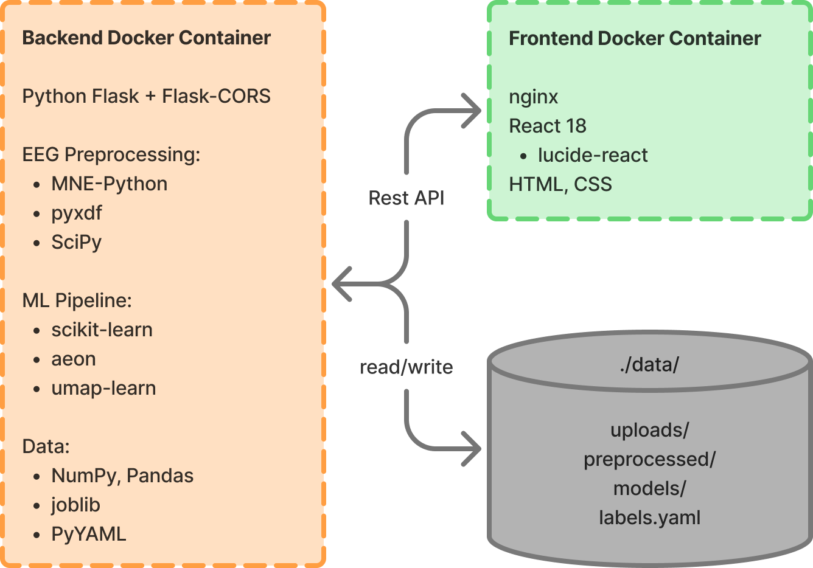
short overview of the architecture
Classification Workflow
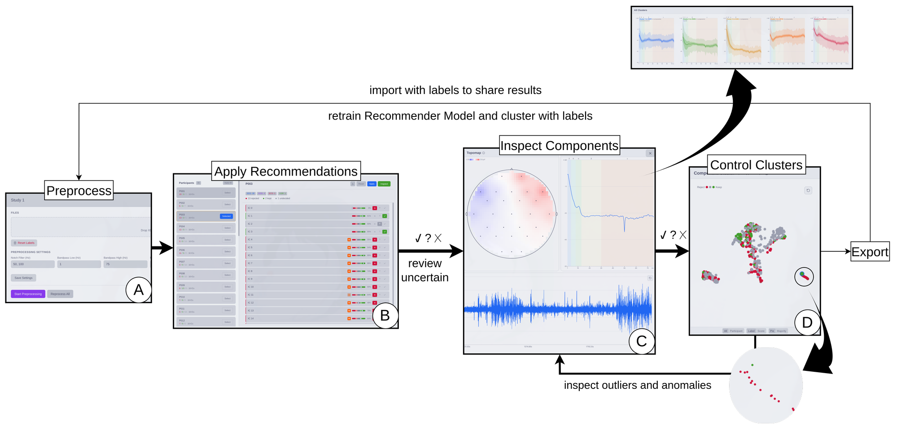
this is the whole workflow in one tool
Confidence Recommender
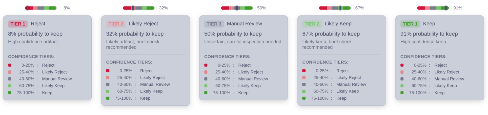
Tier 1 : high-confidenceTier 2 : quick reviewTier 3 : manual inspection
first building block, the recommender
Participants and Components Overview
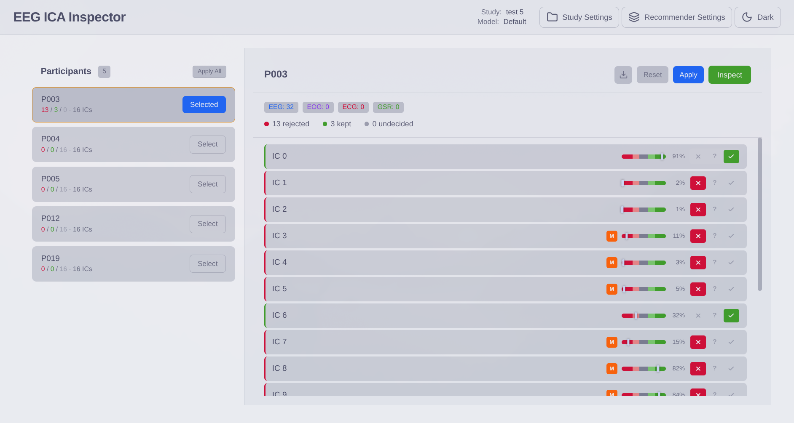
this is where you start
Component Inspector
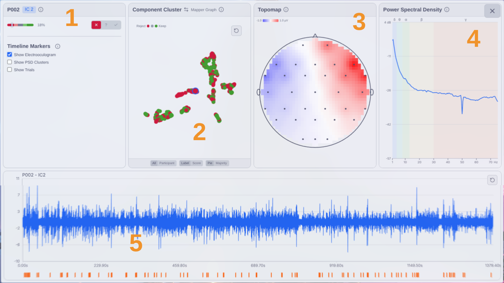
clicking a component opens the inspector - the heart of the tool
Component Cluster and Mapper Graph
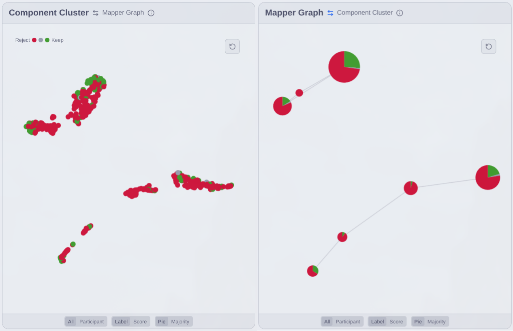
and a view across all participants
Topomap
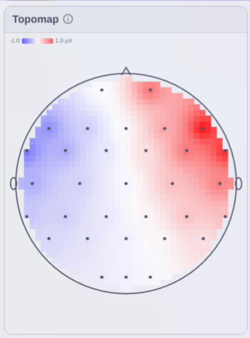
the topomap: how strongly each sensor contributes, and the polarity
Power Spectral Density
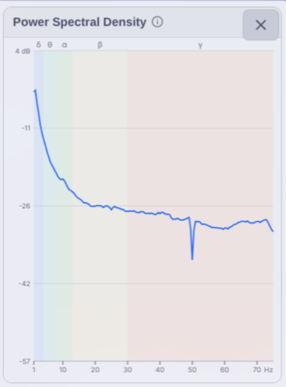
second, the psd
Timeline
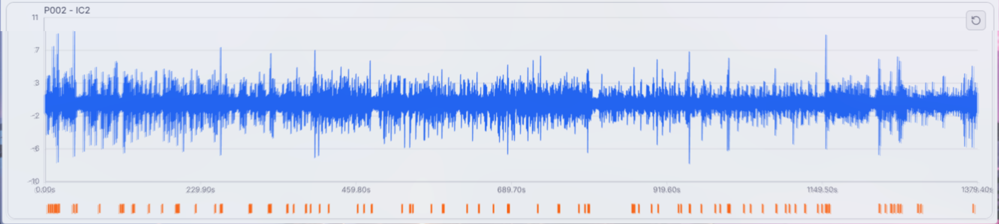
Overlays: EOG markers · trial markers · PSD clusters
third, the timeline - the signal over the whole recording
PSD Clustering
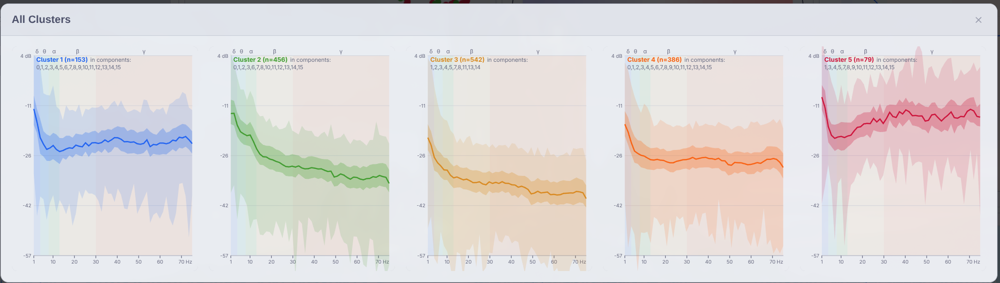
K-means on windowed spectra colour-codes the timeline where a component's frequency profile changes
quick look at that last overlay, psd clustering
Evaluation
Recommendations : review the Tier 1 recommendations, accept three correct ones, and find at least one to overruleArtefact identification : find a component that could be an eye blink and validate it with the topographic mapBand power analysis : examine a low-scored component's band-power clusters on the timeline and interpret the segmentsMapper exploration : using the Mapper Graph, find a mostly-reject cluster, name its artefact type, and re-check any keep labelsView comparison : compare the Component Cluster and the Mapper Graph and discuss which is more helpful
finally the evaluation
thank you for your attention
Backup
Q&A support. Press O for overview.
Not shown in the talk. Flip here to answer, then return.
Recommender Pipeline
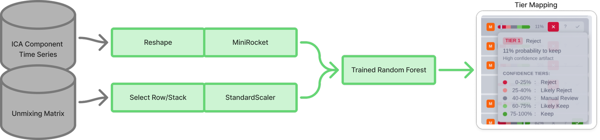
MiniRocket features + 16 topography weights → keep-probability → tiers
480 components / 30 participants · ~75% test accuracy
why MiniRocket → see experiments slide; ICLabel question → answer verbally; do NOT volunteer "second-best model".
Recommender Training
def train_recommender(labelled_components):
X, y = [], []
for c in labelled_components: # ICs from 1+ experiments
ts = pad_or_truncate(c.time_series) # uniform length
feat = MiniRocket().transform(ts) # 9,996 features
topo = c.unmixing_row # 16 spatial weights
X.append(concat(feat, topo)) # 10,012-dim vector
y.append(c.label) # keep / reject
model = RandomForest(n_estimators=100)
model.fit(X, y)
save(model)
return modelbackup if asked how the model is trained
Classification Experiments
Exp Features CV Test Rej. rec.
01 MiniRocket + Ridge (single split) — 77% 58% 02 MiniRocket + Ridge + CV 70% 70% 58% 03 MultiRocket + Ridge + CV 56% 48% 52% 04 MultiRocket + Topography + RF 63% 75% 70% 05 Matrix Profile + Topography + RF (best) 67% 79% 76% 06 MiniRocket + Topography + RF (deployed) 65% 75% 70% 07 All-to-all MP similarity + Topo + RF 67% 72% 58% 08 Multi-scale MP + Spectral + Topo (6 models) 65–73% 61–69% — 09a Feature selection (RFE, 20 of 40) — 70% —
if asked why MiniRocket: speed at inference, accuracy comparable; Exp 05 best on test but slower.
Data Flow
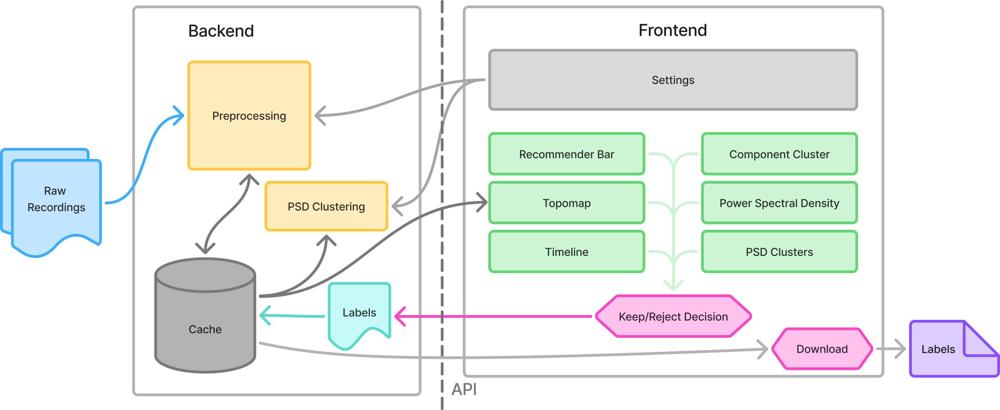
closes the loop; re-enters the exact MNE pipeline they use. Retraining is supported (not shown to improve accuracy).